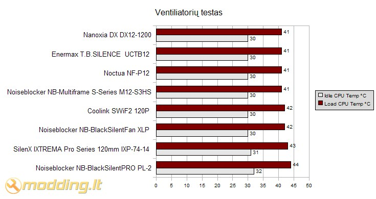

Nanoxia DX serijos ventiliatoriai
Kompiuteris jau seniai nebėra vien darbo įrankis. Vis dažniau jis atstoja ir namų multimedijos centrą bei dirba kaip parsisiuntimų serveris naktį. Todėl kompiuterio skleidžiamas triukšmas yra gan opi problema, nes tikrai niekam nesinori kentėti nemalonų burzgimą ir oro ošimą po stalu, o ypač naktį. Tobulėjant kompiuterio komponentams, spartėjant CPU ir GPU dažniui, parazitinis šilumos kiekis, kurį reikia pašalinti iš korpuso, taip pat, auga. Norint efektyviai aušinti kompiuterį, reikia vis galingesnių aušinimo sistemų, ventiliatorių. Nieko nuostabaus, kad didžiausias triukšmo šaltinis PC korpuse ir yra ventiliatoriai. Šiais laikais, tai bene vienintelis kompiuterio komponentas, turintis judančių dalių (HDD greitu metu turėtų pakeisti SSD diskai, CD/DVD-Rom'ai jau nelabai kas ir naudojasi). O kur judančios dalys, ten vibracijos ir triukšmai. Gaila, bet dar niekas nesukūrė masiškai gaminamo PC ventiliatoriaus be judančių dalių (elektrostatinio ar dar kokio nors), todėl bene vienintelis kompiuterio triukšmo mažinimo būdas yra tylesnių aušintuvų įrengimas. Pristatau jums tyliuosius Nanoxia DX serijos aušintuvus.
Žvilgsnis iš arčiau
Visi DX serijos aušintuvas skiriasi tik dydžių bei techniniais parametrais (greitis, oro srautas, paleidimo įtampa). Išoriškai jie visiškai vienodi. Visi aušintuvai supakuoti į standartines daugelio gamintojų naudojamas skaidžias dėžutes. Dėžučių nugarėlė labai informatyvi. Joje pateikti visi konkretaus aušintuvo techniniai parametrai bei aušintuvo savybės.
Aušintuvų spalvinė gama išlaikyta ir ant dėžučių. Dominuoja juoda ir žalia. Beje, aušintuvų menčių žalia spalva yra pasirinkta nebe reikalo. Ši spalva reprezentuoja tai, kad šie aušintuvai yra "žali" (angl.
green fan), t.y. šie aušintuvai yra optimizuoti ypač mažam elektros energijos suvartojimui, naudojant "ECO contraction" technologiją. Ši technologija užtikrina švelnų ventiliatoriaus paleidimą bei efektyvesnį elektrinės energijos keitimą į kinetinę.
Prie kiekvieno aušintuvo yra pridėti 4 guminiai tvirtinimo elementai "
Vibekiller bolts".
Jais aušintuvą galima įmontuoti labai paprastai, nesinaudojant jokiais papildomais įrankiais.
Jie sugeria parazitinę aušintuvų keliamą vibraciją ir neleidžia jai pereiti į kompiuterio korpusą.
Verta paminėti, kad aušintuvo mentės šviečia UV šviesoje. Kiekvieno aušintuvo maitinimo kabeliukas yra "susleevintas", t.y. įvilktas į specialų juoda vamzdelį. O, taip pat, kiekvienam aušintuvui yra suteikiama 10 metų garantija, kas rodo, kad aušintuvai yra tikrai patikimi ir ilgaamžiai.
Aušintuvų techniniai parametrai
Kaip jau minėjau, aušintuvai tarpusavyje skiriasi tik techniniais parametrais. Šių parametrų apžvalgą pateikiu lentelėje:| Modelis | DX08-1200 | DX08-1600 | DX12-600 | DX12-900 | DX12-1200 | DX14-700 | DX14-1200 |
| Matmenys, mm | 80x80x25 | 80x80x25 | 120x120x25 | 120x120x25 | 120x120x25 | 140x140x25 | 140x140x25 |
| Paleidimo įtampa, V | 6 | 4 | 7 | 4,5 | 4 | 4,5 | 4 |
| Sukimosi greitis, min-1 | 1200 | 1600 | 600 | 900 | 1200 | 700 | 1200 |
| Didžiausias oro srautas, m3/h | 23 | 32 | 44 | 59 | 78,5 | 47 | 89 |
| Didžiausiais sukuriamas slėgis, mmH2O | 0,49 | 0,86 | 0,41 | 0,73 | 0,91 | 0,91 | 1,27 |
| Galia, W | 0,36 | 0,6 | 0,36 | 0,84 | 1,56 | 0,84 | 1,82 |
| Darbo įtampa, V | 4-13 | 4-13 | 4-13 | 4-13 | 4-13 | 4-13 | 4-13 |
| Srovė, A | 0,03 | 0,05 | 0,03 | 0,07 | 0,13 | 0,026 | 0,11 |
| Triukšmo lygis, dB/A | 10 | 17 | 10 | 13,5 | 20,5 | 17 | 22 |
Kaip matote, aušintuvai yra tikrai "elektriškai taupūs". Pats didžiausiais ir galingiausiais aušintuvas DX14-1200 suvartoja tik 1,82 W elektros energijos, kas yra tikrai mažai. Nanoxa - pirmas mano matytas aušintuvų gamintojas, kuris užrašė aušintų paleidimo įtampas. Šios įtampos yra labai svarbios naudojant aušintuvus su apsukų reguliatoriais, nes parinkus per maža įtampą ventiliatorius gali ir nestartuoti. Geriausias to pavyzdys yra DX12-600, kurio darbo įtampos diapazonas 4-13 V, o paleidimo įtampa 7 V. Įsivaizduokim situaciją: užmontuojam šį aušintuvą ant CPU radiatoriaus. Dirbant kompiuteriui nusprendžiam, kad aušintuvas dirba per garsiai ir sumažinam jo apsukas, potenciometriniu rheobusu sumažindami maitinimo įtampą, tarkim, iki 5V. Ventiliatorius šauniai dirba toliau, žinoma, atitinkamai lėčiau. Prisireikė išjungti kompiuterį. Kito įjungimo metu aušintuvas nebestartuoja, nes jam nebe užtenka paleidimo momento, t.y. paleidimo įtampa yra per žema. Gerai, kad kitų DX serijos aušintuvų paleidimo įtampos yra labai artimos darbo diapazono žemutinei ribai.
DX serijos aušintuvų savybės
- ECO contraction - technologija, užtikrinanti švelnų ventiliatoriaus paleidimą bei efektyvesnį elektrinės energijos keitimą į kinetinę.
-
Nano Technology Bearings - aušintuvų guoliai yra pagaminti iš specialios nanotechnologiškai sukurtos medžiagos, iki minimumo sumažinančios trintį ir užtikrinančios daugiau nei 150000 valandų darbą. Dėl specialios paviršiaus struktūros šie guoliai nereikalauja papildomo tepimo. Guoliai, taip pat, yra atsparūs vandeniui, dulkėm, smėliui - visiems pašaliniams objektams, didesniems nei 1 nm.
-
Makrolon® frames and blades - aušintuvų rėmeliai ir mentės yra pagamintos pagamintos iš ypač tirto ir lengvo polikarbonato Makrolon®. Iš šios medžiagos pagamintas aušintuvo rėmas puikiai sugeria menčių keliamas vibracijas, neleisdamas jos pereiti į kompiuterio korpusą.
-
Balanced rotors - aušintuvo rotorius (sukioji aušintuvo dalis) yra idealiai subalansuota, leistina paklaida vos 0.2 mm. Tai užtikrina ilgą tarnavimo trukmę bei sumažina parazitinių vibracijų stiprį.
-
Vibekiller bolts - prie kiekvieno aušintuvo Nanoxia prideda 4 guminius montavimo elementus "Vibekiller bolts". Jie palengvina aušintuvo montavimą (nereikia jokių įrankių) ir neleidžia aušintuvo keliamai vibracijai pereiti į kompiuterio korpusą.
Rezultatai
Testavimo sistema:
- CPU Cooler - Noctua NH-U12P SE2 radiatorius su skirtingais ventiliatoriais
- Case - Antec Mini P180
- Mainboard - Asus M2N68-AMSE2
- CPU - AMD ATHLON 64 X2 Dual-Core 5000+ AM2 (65W)
- RAM - Corsair DDR2 KIT 2X1G 800MHZ TWIN2X2048-6400 G
- HDD - SEA BARRACUDA 160GB 7200rpm
- PSU - Cooler Master Silent Pro M700
- Case Fans - Noctua NF-S12B FLX 120mm (1200rpm, 100.6 m³/h, 1.31 mm H2O), Antec 200mm TriCool (400rpm, 39 CFM)
Procesoriaus (CPU) temperatūra testuojama Idle ir Load rėžimais. Load rėžimui naudojama Orthos programa. Temperatūros rodmenys stebėti SpeedFan 4.39 bei PC Probe II V1.04.74 programomis. Testavimams naudotas Antec Mini P180 korpusas galinėje sienelėje turi Noctua NF-S12B FLX 120mm orą ištraukiantį aušintuvą (1200rpm, 100.6 m³/h, 1.31 mm H2O), o taip pat viršuje esantį, orą ištraukiantį, Antec 200mm TriCool ventiliatorių (400rpm, 39 CFM).
Testuose palygintos CPU temperatūros aušinant jį Noctua NH-U12P SE2 aušintuvu naudojant vieną Nanoxia DX DX12-1200, vieną NB-Multiframe S-Series M12-S3HS , vieną Enermax T.B.SILENCE UCTB12, vieną SilenX IXTREMA Pro Series, vieną SWiF2 120P ventiliatorių, vieną NB-BlackSilentPRO PL-2, vieną NB-BlackSilentFan XLP arba vieną Noctua NF-P12 ventiliatorių. Visų ventiliatorių apsukos nustatytos 1000 rpm panaudojus Noiseblocker NB-Fanspeed Controller.
Pro et Contra
Pliusai- Gerai aušina
- Ypatingai tylūs
- Lengvas montavimas
- Santykinai nebrangūs (10-15 €)
- UV reactive (šviečia UV šviesoje)
- Platus matmenų ir greičių pasirinkimas
- Pridėti 4 guminiai montavimo elementai
- DX08-1200 ir DX12-600 paleidimo įtampos yra kiek per aukštos
 Kaip matote,
Nanoxia DX ventiliatorių pliusų persvara tikrai ženkli. O ir minusas yra gan nežymus. Vis vien, naudojant masiškai gaminamus greičio reguliatorius, nenusileisit iki tokių įtampų. Apskritai, aušintuvai tikrai šaunūs. Tylūs, gražūs, gerai aušina. Aušintuvų gamyboje naudojamos technologijos užtikrina ilgą tarnavimo trukmę ir aukštus energetinius rodiklius. Nanoxia siūlo platų aušintuvų matmenų ir greičių pasirinkimą, todėl kiekvienas galės susirasti aušintuvą pagal savo poreikius. Nesileisdamas į bereikalingus diskursus, Nanoxia DX serijos aušintuvams skiriu
10 balų iš
10 galimų !
Kaip matote,
Nanoxia DX ventiliatorių pliusų persvara tikrai ženkli. O ir minusas yra gan nežymus. Vis vien, naudojant masiškai gaminamus greičio reguliatorius, nenusileisit iki tokių įtampų. Apskritai, aušintuvai tikrai šaunūs. Tylūs, gražūs, gerai aušina. Aušintuvų gamyboje naudojamos technologijos užtikrina ilgą tarnavimo trukmę ir aukštus energetinius rodiklius. Nanoxia siūlo platų aušintuvų matmenų ir greičių pasirinkimą, todėl kiekvienas galės susirasti aušintuvą pagal savo poreikius. Nesileisdamas į bereikalingus diskursus, Nanoxia DX serijos aušintuvams skiriu
10 balų iš
10 galimų !
Modding.lt komanda dėkoja
Gökhan Avci iš www.nanoxia-europe.com už apžvalgai suteiktą produktą.
Jei norėsite pakomentuoti mano straipsnį arba pareikšti savo nuomonę, apsilankykite Modding.lt forume.


{kind=link}
{kind=link}
{kind=link}
{kind=link}
{kind=link}
{kind=link}
{kind=link}
{kind=link}